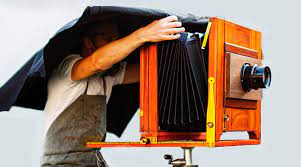
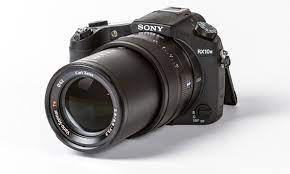

Fotografia: do grego φῶς [fós] ("luz") e γραφίς [grafis] ("instrumento para escrever, gravar, desenhar ou pintar") ou γραφή [grafé] (“escrita”), significa "desenhar com luz e contraste"; noutros termos,[1] é essencialmente a técnica de criação de imagens por meio de exposição luminosa, fixando-as em uma superfície sensível.[2] A primeira fotografia reconhecida remonta ao ano de 1826 e é atribuída ao francês Joseph Nicéphore Niépce. Contudo, a invenção da fotografia não é obra de um só autor, mas um processo de acúmulo de avanços por parte de muitas pessoas, trabalhando, juntas ou em paralelo, ao longo de muitos anos. Se por um lado os princípios fundamentais da fotografia se estabeleceram há décadas e, desde a introdução do filme fotográfico colorido, quase não sofreram mudanças, por outro, os avanços tecnológicos têm sistematicamente possibilitado melhorias na qualidade das imagens produzidas, agilização das etapas do processo de produção e a redução de custos, popularizando o uso da fotografia.
Atualmente, a introdução da tecnologia digital tem modificado drasticamente os paradigmas que norteiam o mundo da fotografia. Os equipamentos, ao mesmo tempo que são oferecidos a preços cada vez menores, disponibilizam ao usuário médio recursos cada vez mais sofisticados, assim como maior qualidade de imagem e facilidade de uso. A simplificação dos processos de captação, armazenagem, impressão e reprodução de imagens proporcionados intrinsecamente pelo ambiente digital, aliada à facilidade de integração com os recursos da informática, como organização em álbuns, incorporação de imagens em documentos e distribuição via Internet, têm ampliado e democratizado o uso da imagem fotográfica nas mais diversas aplicações. A incorporação da câmera fotográfica aos aparelhos de telefonia móvel têm definitivamente levado a fotografia ao cotidiano particular do indivíduo. Dessa forma, a fotografia, à medida que se torna uma experiência cada vez mais pessoal, deverá ampliar, através dos diversos perfis de fotógrafos amadores ou profissionais, o já amplo espectro de significado da experiência de se conservar um momento em uma imagem.
